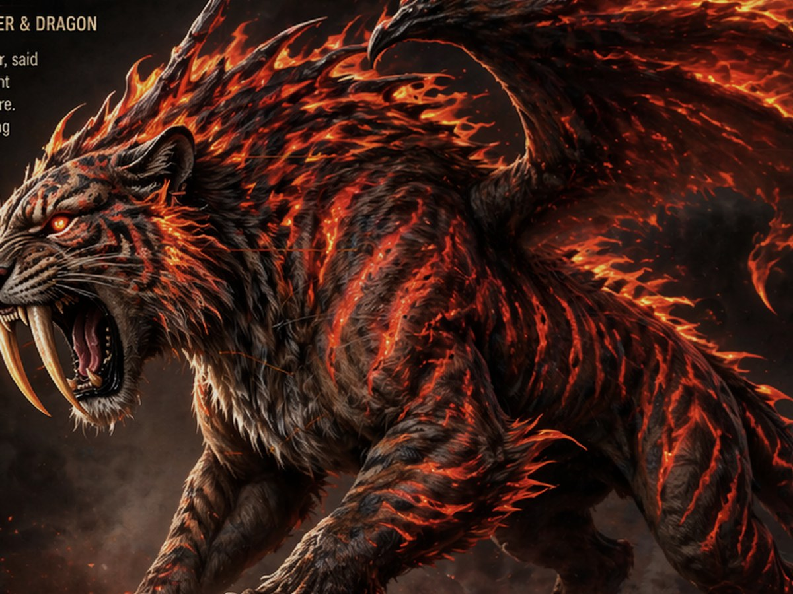
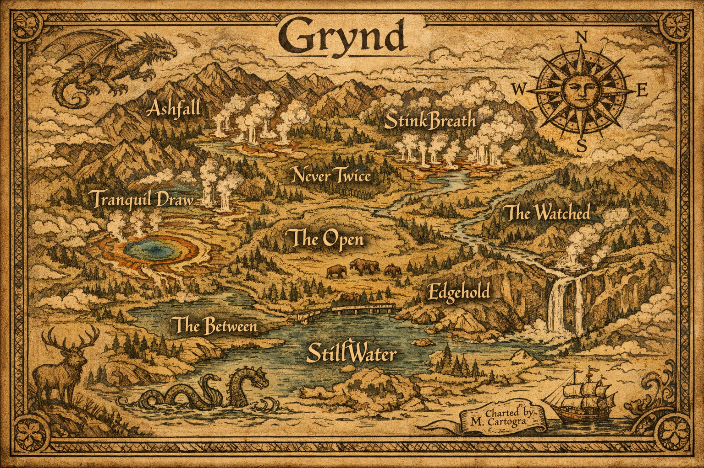

I
Athena and the Revolution
Letters, testimonies, songs, and institutional records concerning the figure whose cultural revolution altered Fae society for centuries.
- Condition
- Fragmentary
- Interpretation
- Contested
An original archive by Matthew Thomas
General Collection · Public Consultation
The Library of Zephyr preserves histories from the first human bonds with magic to the last negotiations over memory itself.
A note to the reader
No archive is neutral. These records contain eyewitness testimony, official reports, later interpretation, myth, omission, and deliberate revision. Where the sources disagree, the disagreement has been preserved.
Principal holdings
Selected records available for general scholarly consultation.
Letters, testimonies, songs, and institutional records concerning the figure whose cultural revolution altered Fae society for centuries.
A high-reliability record of institutional loyalty giving way to conscience during the ideological schism within the Warden Corps.

The probable ruler beneath the legend: first mage, breaker of gates, and companion to the earliest bonded Pyranor.
“Lucas is not a monster hunter. He is a man attempting to calculate the value of a human life.”
The papers of a healer whose refusal to accept one death transformed magical medicine and unsettled its ethical limits.
Humanity petitions for the return of its history. Its custodian requests evidence that the loss will not happen again.
Chronological register
Dates reflect the current scholarly consensus and remain subject to revision.
Sovereign record groups
Civilizations encountered through their surviving laws, customs, correspondence, oral traditions, and maps.

Geographic Record · Copy of uncertain dateNATIONAL RECORD GROUP · GRY–01
Formerly associated with the Yellowstone region, Grynd held broad territories and exerted considerable influence during the Boundary Wars. Its surviving records reveal a culture organized around routes, passage, and the control of movement.
Registry House reference
Fae names locate a person within lineage, law, community, and land. The complete two-unit name is one true name, not a human-style given name and surname.
Modern convention follows the Naming Accords. Pre-Accord practice varies by nation and surviving source.
Meditations & elegies
Poetry has always been my way of examining the things that refuse to leave me alone.
Some pieces are personal. Some are philosophical. Some borrow from myth, history, or faith. Most begin with a question rather than an answer.
PRESERVATION LAYER // NON-ORIGINAL METADATA
“A civilization does not lose its history once. It loses it every time preservation is mistaken for permanence.”
— Curator, continuity assessment 7.4
Outside the fiction
Matthew Thomas creates speculative histories concerned with memory, grief, inherited belief, moral responsibility, and the stories people preserve about themselves.
This archive presents fictional works in development. Collections marked as processing will expand as records are written, authenticated, and released.
The Library of Zephyr is an original fictional archive and creative property by Matthew Thomas. By Matthew Thomas is the author home through which this and future collections are presented.